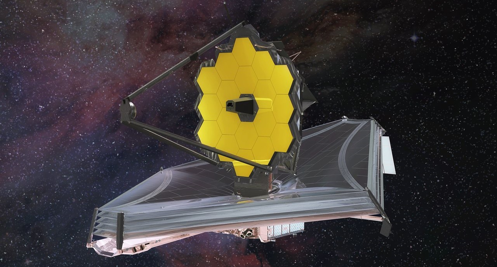

El mayor telescopio espacial de la historia: James Webb.
El mayor telescopio espacial de la historia ya está en órbita.
El telescopio James Webb, que costó US$10.000 millones y tardó tres décadas en construirse, despegó desde la Tierra el 25 de diciembre de 2021 y emprendió su misión de buscar las primeras estrellas que alumbraron el cosmos.
Equipado con un espejo de 6,5 metros de ancho y cuatro instrumentos de altísima sensibilidad, Webb se enfocará en un espacio muy reducido del cielo durante días intentando detectar luz que ha estado viajando a través de la inmensidad del espacio por más de 13.500 millones de años.
Observará casi todo lo que hay para ver más allá de la Tierra: desde lunas heladas y cometas en nuestro propio sistema solar hasta los colosales agujeros negros que residen en el centro de todas las galaxias. Se espera que esté particularmente adaptado para estudiar planetas que orbitan otros soles.
El Webb ha sido diseñado para ver todos sus objetivos de una manera muy particular: en el espectro infrarrojo
Está diseñado específicamente para detectar longitudes de onda más largas, las cuales, aunque invisibles para nuestros ojos, están exactamente en el punto donde el brillo de los objetos más distantes del universo van a aparecer.
Además La NASA completó con éxito la parte “más difícil” del despliegue de su nuevo telescopio espacial James Webb.
El escudo solar que protegerá la nave mientras mira hacia las profundidades del universo ya está completamente desplegado, según informó la agencia espacial.
El escudo solar tiene el tamaño de una pista de tenis cuando está completamente desplegado, pero tuvo que ser plegado con precisión para que pudiera caber en el cohete que lo lanzó al espacio el día de Navidad. Desde que llegó al espacio, el telescopio ha ido desplegando con delicadeza sus distintas partes, incluidas las cinco capas que debían desplegarse por separado.
No se sabe exactamente qué verá el JWST cuando mire hacia el espacio, pero cuanto más tiempo se detenga su mirada en galaxias antiguas, mundos extraterrestres, estrellas pulsantes o incluso las lunas de nuestro propio sistema solar, más probable será que descubramos algo que ni siquiera hemos imaginado.